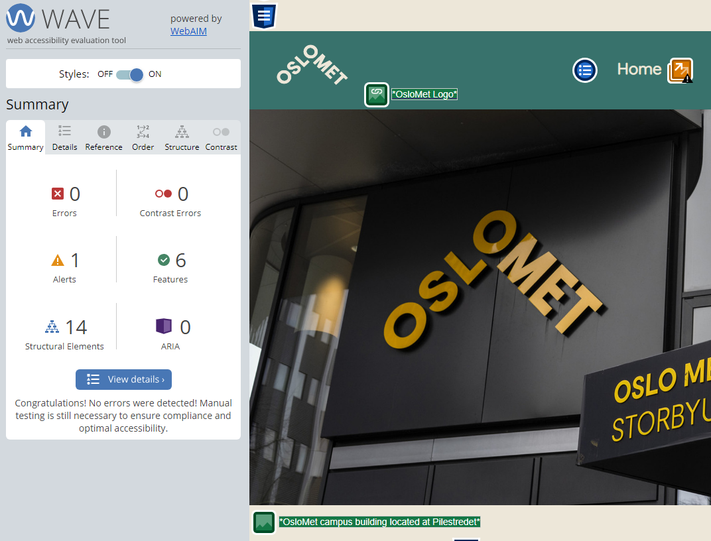
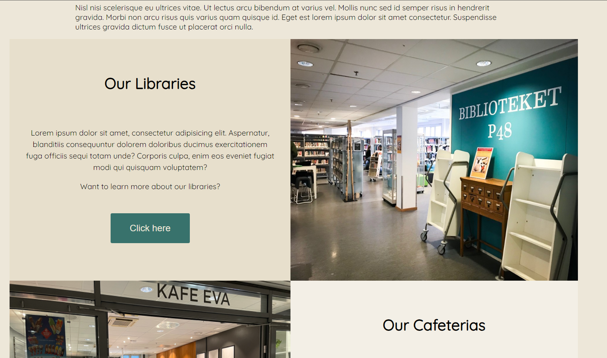

Home-Page
We designed the homepage to be welcoming with an easy to understand structure. The header contains links to all the other pages with an underline that appears when you hover over to indicate what you are clicking on. The logo itself is clickable and sends you to the home page, but we added "Home" in the header itself as an afterthought, in case older people don't know the logo is clickable. This causes an alert in WAVE for redundant links, but the clickable logo is intentional. All the pictures including the logo have a descriptive alt text so the webpage works for visually impaired users. There are links included in the main text and are indicated to be clickable with an underline. The page is accessible for all types of screens. We used a 2x2 grid at the bottom to spice up the look of the page, when the screen gets narrow, the grid becomes one column. We used plenty of structural elements, using semantic tags as much as we can. This ensures the code can be understood by other developers, aswell as helps facilitate page navigation for users of assistive technologies.
We deliberatly chose to use these colors to make it easy on the eyes and readable with text contrasting the background.
Cafeteria
In our cafeteria, accessibility and universal design are factors that have been taken care off, because we believe that everyone should be taken into account! Good contrasts in all of our text will help users with impaired vision. Ingredients in the food are one of the most important things for users to know, in our menu the allergens are informed with emojis/Figure, so that you can know about allergens even if you cannot read. By hovering over, the allergens come up as text as well. All images have an alternative text. The site has access to zoom functions to read text better and in general the menu is very simple and has a clear layout so that you can easily see the dish, the price, and you can get valuable information about the content and allergens. "WAVE web accessibility tool" helped ensuring this.
Libraries
To make the library page accessible i chose to not put all the text not too close together. Making it easier to read, and therefore making it more accessible.
Also making sure that everything that images have alternatives for page readers to read is important to make the website accessible.
Bright and contrasted colors make the page easier to navigate. It helps to have a clear separation between the header, main body and the footer.
Topical-Page
This page was designed with the focus off mobile screen use, and then overrides elements with different breakpoints so it could expand to tablets and desktops too and still look good. We wanted to make it possible to get clear information regardless the device used. Implementing videoes for the topics to make it more user friendly. (The information are just different topics we have written about, it doesnt have a flow.)
Pictures
These are some pictures that show some of the accessibility features. The first picture shows the web accessibility evaluation tool in use, which we used on all pages to ensure there were no errors. We had to make the background white so that the pictures are visible

In the picture below you can see part of the cafeteria page. We chose to have a menu showing some of the dishes. Since it is a menu, we added emojis to show the allergens for accessibility.
This is a grid from the homepage. It is 2x2 on wide screens.

When the screen width gets smaller, the grid changes to fit the screen. We focused a lot on scalability and this is just one example of it.